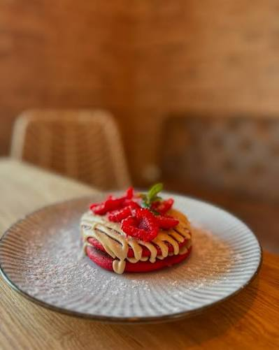

Bolos
Red velvet com morangos, chocolate e laranja, frutos vermelhos ou baunilha com morangos. Também disponíveis por encomenda.
Cafetaria da Vila · Condeixa-a-Nova
Brunch, croissants frescos, tostas e bolos por encomenda na Cafetaria da Vila, em Condeixa-a-Nova.
Horário: terça a sábado, 10h–20h
Da cozinha da casa
Contacte-nos para confirmar a ementa e a disponibilidade.
Red velvet com morangos, chocolate e laranja, frutos vermelhos ou baunilha com morangos. Também disponíveis por encomenda.
Tostas em pão rústico com rúcula e batata frita, brunch e croissants frescos.
Consulte o café para confirmar as opções disponíveis.
Consulte o café para conhecer a seleção disponível.
Opiniões de quem nos visita
Síntese editorial · Restaurant Guru
★★★★★
As opiniões destacam o ambiente tranquilo, a qualidade do serviço e do café, e preços considerados razoáveis.
Ver opiniões no Google11 meses atrás · Facebook
★★★★★
Descreve um ambiente sereno, pratos frescos com sabor caseiro e um atendimento que a fez sentir-se em casa.
Ver opinião no FacebookHá um ano · Facebook
★★★★★
Destaca o ambiente agradável e a qualidade da comida.
Ver opinião no FacebookNão foram encontradas opiniões.
Os comentários do Facebook são sínteses das opiniões públicas visíveis.
Feito e servido na Vila



Encomendas
Bolos feitos à mão por encomenda. Contacte-nos para saber mais.
Contactar para encomendarConsulte o horário ou ligue-nos antes de vir.
Esplanada · Acessível a cadeiras de rodas
Preço médio: 10 € a 15 € por pessoa
TERÇA A SÁBADO
| Segunda | Fechado |
|---|---|
| Terça | 10h00–20h00 |
| Quarta | 10h00–20h00 |
| Quinta | 10h00–20h00 |
| Sexta | 10h00–20h00 |
| Sábado | 10h00–20h00 |
| Domingo | Fechado |
O horário pode mudar em feriados.